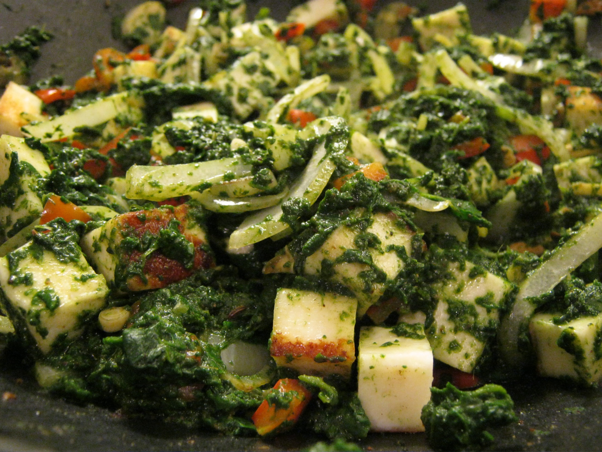

Home
Palak Paneer

Description
An Indian palak paneer recipe.
Ingredients
- 24 oz frozen chopped spinach
- 1 cup yellow onion, chopped
- 1.5 tbsp ginger, minced
- 5 garlic cloves, minced
- 2 tbsp tomato paste
- 1 tsp garam masala
- 2 tsp ground coriander
- 1 tsp cumin
- 1 tsp cayenne pepper
- 1.5 tsp tumeric
- 2 tbsp extra virgin olive oil
- 2 serrano peppers, chopped
- 5 tbsp heavy cream
- 1.5 tsp tumeric
Steps
- Toss paneer cubes in tumeric, cayenne, salt, and oil
- Heat up a large skillet over medium and fry panner cubes. Remove paneer from skillet and set aside.
- Reduce heat to medium-low. Add oil, onion, garlic, ginger, and Serrano chile to skillet. Cook until browned.
- Add garam masala, and cumin to skillet. Add a touch to water to prevent spices from burning.
- Raise heat to medium. Add spinach and 1/2 cup of water to skillet. Mix well and cook uncovered for 5-8 minutes or until most of the water has been absorbed (15 mins if cooking from frozen)
- Add heavy cream to skillet and let cook until well incorporated, stirring occasionally.
- Mix in panner and serve.